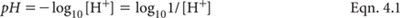
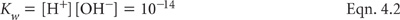

The pH value of soil is a numerical expression of the intensity of acidity (or alkalinity) that in turn influences soil conditions and plant growth. The effects include changes in the solubility and activity of various biologically important elements and processes.
As with most measurements on soil, pH values vary with the procedure used. For example, pH is affected by the soil/solution ratio and by the composition and temperature of the equilibrating solution. In general, pH values increase as the ratio of soil/solution widens. Also, pH values of most soils are lower when determined in a salt solution rather than at the same soil/solution ratio in 1:5 soil/water (pHw). Differences are commonly in the vicinity of 0.5 to 1.0 pH unit but inter-relationships vary with soil type and often are polynomial (Aitken and Moody 1991; Little 1992) rather than linear (Conyers and Davey 1988; Bruce et al. 1989). In highly weathered soils, the differences between pH values measured in salt solutions and in water extracts can be insignificant or even reversed. Ultimately, the laboratory measurement of soil pH, irrespective of the procedure, reflects the average of a range of effects at microscopic scale, including soil ionic strength, soil composition and biological activity.
For large numbers of Queensland surface soils, pH in a 1:5 soil/water extract of ≈5.0–5.4 is equivalent to pH in a 1:5 soil/0.01 M CaCl2 extract of ≈4.6. At pH 4.0 for a 1:5 soil/water extract, the corresponding pH of a 1:5 soil/0.01 M CaCl2 extract is ≈3.5 (Ahern et al. 1995), although there are many exceptions, particularly in highly weathered and organic soils with variable surface charge characteristics.
The addition of soluble fertilisers to non-saline soils may result in an apparent lowering of soil pH when measured in water extracts but the presence of soluble fertilisers usually has little effect on the apparent pH, when measured in a salt solution such as 0.01 M CaCl2. These effects are observed without any addition of H+ to the system. Preferred pHw levels in surface soils (0-10 cm) range from 6.0–8.0, although good growth of many plant species is possible over a wide range of pH values, in the absence of nutrient deficiencies or toxicities. Ratings for soil pH values are given in Table 4.1.
Table 4.1. Ratings for soil pH (adapted from Bruce and Rayment 1982 and USDA-NRCS 2004).
Rating |
pH range |
Rating |
pH range |
Ultra acid Extremely acid Very strongly acid Strongly acid Moderately acid Slightly acid |
1.8–3.4 3.5–4.4 4.5–5.0 5.1–5.5 5.6–6.0 6.1–6.5 |
Neutral Slightly or mildly alkaline Moderately alkaline Strongly alkaline Very strongly alkaline Ultra alkaline |
6.6–7.3 7.4–7.8 7.9–8.4 8.5–9.0 9.0–10 >10 |
Table 4.2. H+ and OH– Šns in aqueous solutŠn at different values of pH.
pH |
Rating |
H+ mol/L |
OH– mol/L |
0 |
Maximum acidity |
1 |
1 × 10–14 |
1 |
|
1 × 10–1 |
1 × 10–13 |
2 |
|
1 × 10–2 |
1 × 10–12 |
3 |
|
1 × 10–3 |
1 × 10–11 |
4 |
|
1 × 10–4 |
1 × 10–10 |
5 |
|
1 × 10–5 |
1 × 10–9 |
6 |
|
1 × 10–6 |
1 × 10–8 |
7 |
Neutral |
1 × 10–7 |
1 × 10–7 |
8 |
|
1 × 10–8 |
1 × 10–6 |
9 |
|
1 × 10–9 |
1 × 10–5 |
10 |
|
1 × 10–10 |
1 × 10–4 |
11 |
|
1 × 10–11 |
1 × 10–3 |
12 |
|
1 × 10–12 |
1 × 10–2 |
13 |
|
1 × 10–13 |
1 × 10–1 |
14 |
Maximum alkalinity |
1 × 10–14 |
1 |
Generally, pHw values ≤4 are indicative of sulfides (Isbell 1998, Thomas 1967; Chapter 20, this volume), while levels ranging from around 8.5–9.5 are indicative of significant quantities of exchangeable Na (Thomas 1967). Soils or sediments with pH values >10 suggest the presence of free OH–, probably associated with the industrial use of caustic soda (NaOH).
Nutrient availability tends to optimise in the pH range 6–7, while soils that are strongly to very strongly acidic typically enhance the solubilities of Al, Fe and B, and restrict the solubility of plant available Mo. At elevated pH levels (moderately to very strongly alkaline), the plant availability of nutrients such as P, B, Zn, Mn, Fe and possibly Cu may be restricted. In contrast, Mo availability is enhanced.
Measurement of pH traditionally involves detection of the change in potential of a glass-calomel electrode array (separate electrodes or in combination), nowadays using a pH or millivolt meter, standardised against buffer solutions of known pH. As values for these buffers vary with temperature (Bates 1962; Alvarez 1984), it is recommended that automated temperature compensation be activated, if included as a feature of the pH meter. Soil pH can also be ‘predicted’ by a surrogate relationship established between MIR and conventional pH measurements of relevant soils.
Theoretically, pH is the negative logarithm of the H+ activity [H+], as shown in Equation 4.1.

It follows that the pH scale is logarithmic, indicating a unit change in pH is equivalent to a ten-fold increase or decrease in the activity of H+ or OH–. The relationship between the activities of H+ and OH– is based on the disassociation constant of pure water (Kw; Equation 4.2), with examples provided in Table 4.2. In routine measurements of soil pH, it is standard practice to ignore effects on H+ activities due to varying ionic species and solution ionic strengths.

When there is a need to calculate the average or median pH value (or the like) from a collection of results, the measured pH values should first be converted into –log [H+] before applying the relevant mathematics. That answer must then be transformed back to pH units (antilog). For example, the average (± std.dev.) of pH values 4.0, 4.5, 5.5, 7.0, 8.3 and 8.8 might appear to be 6.35 ± 1.99 but is actually 4.65 ± 4.40. This approach should be applied to results from all pH methods.
Preambles to individual pH methods in this chapter (see Table 4.3 for summary details) provide brief details of the chemistries involved. The increasing use of automated pH ‘robots’ (Grigg et al. 1980; see Figure 4.1 for an example) is recognised by covering pH measurement with or without stirring at the time of measurement. The allocation of different method codes to cover these options reflects the fact that measurement conditions may sometimes slightly affect apparent pH results.
Apart from the method involving oxidation with H2O2, which is best performed on field-moist soil, other laboratory methods use air-dry soil of <2 mm particle size, apart from the method based on MIR. The MIR method uses air-dry soil with a particle size of <0.5 mm.
No correction for water content is made when reporting pH results, and possible specific ion effects on response of the glass electrode are assumed to be insignificant. See Method 14C1 for the determination of pH in saturation extracts and Method 20B1 for pH measurements in known ASS. International standard ISO 10390 (ISO-pH 2005) covers soil pH measured in water, 0.01 M calcium chloride and in 1.0 M potassium chloride but its specification of equilibration at 20°C makes it inappropriate for use in laboratories located in the tropics and sub-tropics, including many Australian laboratories, where laboratory temperatures of ≈23–25°C are common.
Figure 4.1. Example of an automated soil pH analyser operating in a working laboratory.
Table 4.3. Summary details of method codes, method titles, technologies and expected reliability of laboratory and field tests described in this chapter.
Code |
Technology |
Test method |
Notes |
4A1 |
Glass-calomel electrodes and millivolt meter. |
pH of 1:5 soil/water suspension. |
Reliable and quick laboratory method, but results affected by presence of soluble salts. |
4A2 |
|
pH of 1:1 soil/water suspension. |
Variants of 4A1. |
4A3 |
|
pH of 1:2.5 soil/water suspension. |
|
4B1 |
|
pH of 1:5 soil/0.01 M CaCl2 extract – direct (without stirring during measurement). |
Reliable and quick laboratory method. Results largely unaffected by presence of soluble salts. |
4B2 |
|
pH of 1:5 soil/0.01 M CaCl2 extract – following method 4A1 (without stirring during measurement). |
Slight variants of 4B1, insufficient to significantly affect final pH results. |
4B3 |
|
pH of 1:5 soil/0.01 M CaCl2 extract – direct (with stirring during measurement). |
|
4B4 |
|
pH of 1:5 soil/0.01 M CaCl2 extract – following method 4A1 (with stirring during measurement). |
|
4B5 |
MIR diffuse reflectance spectroscopy. |
pH of 1:5 soil/0.01 M CaCl2 extract equivalent, by MIR reflectance spectroscopy. |
Approx. surrogate of 4B1, by correlation. |
4C1 |
Glass-calomel electrodes and millivolt meter. |
pH of 1:5 soil/1 M KCl extract – direct (without stirring during measurement). |
Reliable and quick laboratory method. Results largely unaffected by presence of soluble salts. |
4C2 |
|
pH of 1:5 soil/1 M KCl extract – following method 4A1 (without stirring during measurement). |
Slight variants of 4C1, insufficient to significantly affect final pH results. |
4C3 |
|
pH of 1:5 soil/1 M KCl extract – direct (with stirring during measurement). |
|
4C4 |
|
pH of 1:5 soil/1 M KCl extract – following method 4A1 (with stirring during measurement). |
|
4D1 |
|
pH of NaF suspension and ‘reactivity class’. |
Useful laboratory indicator of presence of reactive hydroxyl Al groups |
4E1 |
|
pH of H2O2 extract. |
Useful laboratory indicator of presence of oxidisable sulfide ions |
4F1 |
Calculation. |
Δ pH. |
Quick, cheap indicator of variable-charge characteristics of the soil. |
4G1 |
pH indicator – wet chemistry. |
Field determination of pH. |
Affected by quality of reagents and operator skill. |
Figure 4.2. The effects of soil pH values on % robust CVs derived from ASPAC soil inter-laboratory proficiency programs from 1997–2007. The trends are not significant.
Raupach (1954) examined errors associated with the laboratory measurement of pH in 1:5 soil/water suspensions. For example, the absence of equilibrium may give differences as high as 1.0 pH unit when measurements are made upon sedimenting alkaline suspensions. He reported no measurable errors due to this cause below pH 5. Neither did the presence of soluble salts modify the differences observed.
Ducksbury and Telford (1972) have reviewed the high precision measurement of pH. They reported industrial laboratories, using standard procedures, can generally make pH determinations with a precision of ±0.03 to ±0.08 pH units, with a few caveats. Soil pH measurements, however, mostly need no greater accuracy than ±0.1 unit and, quite often, circumstances do not justify this precision (Raupach 1954). This is supported by ISO-pH (2005) and by many years of interlaboratory soil proficiency testing by ASPAC (Rayment 2005). Figure 4.2 shows that robust coefficients of variation (%) are independent of reported pH values by two common methods, when homogenous soils of <0.5 mm were analysed by multiple laboratories. The data (sample median pH values) were sourced from ASPAC inter-laboratory proficiency programs from 1997–2007, including those reported by Peverill and Johnstone (1997) and Rayment et al. (2007). See Appendix 2 for additional information on method performance.
Accuracy and precision are influenced by the ‘condition’ of the glass electrode in particular, which is often affected by its surface properties. In particular, glass ‘condition’ can deteriorate, sometimes quite rapidly when used continuously, and therefore benefits from ‘resting’; a few hours to several days may be necessary. Response characteristics can be improved and extended by soaking the glass electrode in an aqueous solution of water-structure making ions comprising lithium acetate (CH3COOLi.2H2O) and lithium sulfate (Li2SO4.H2O). In contrast, soaking in water-structure breaking ions such as sodium chloride and potassium borate invariably results in rapid deterioration of glass electrode characteristics (Ducksbury and Telford 1972). An alternative is to immerse the bulb into a 10% aqueous solution of 10% ammonium hydrogen difluoride (NH4HF2) for 1 min, then dip in a 1:1 solution of deionised water/10 M HCl, followed by thorough rinsing with deionised water and a final wipe with a damp cloth to remove any adhering silicate. After treatment, immerse the glass electrode in a reference electrolyte at least overnight, then store in deionised or distilled water (never allow to dry up).
Operators required to measure solutions containing sulfides must remain alert to the possibility of Ag2S precipitation in the diaphragm, a condition that can be corrected by soaking/washing with a freshly prepared aqueous solution of 7% thiourea [CS(NH2)2; 2.66 g/500 mL, slightly acidified with citric acid].